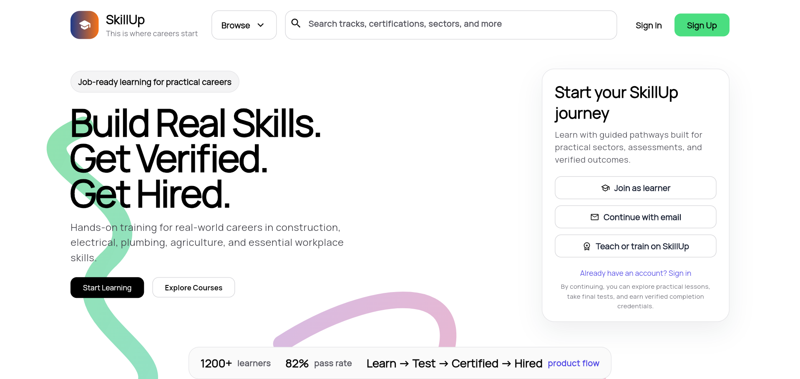
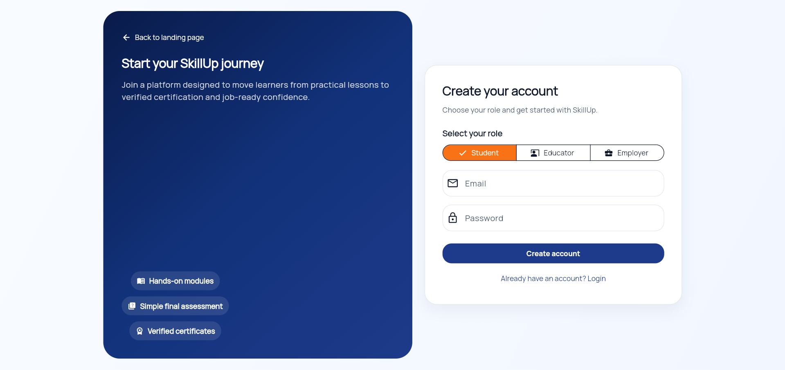
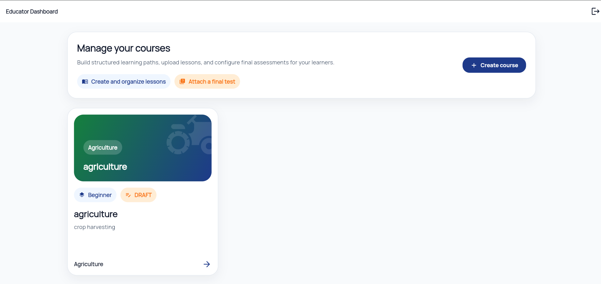
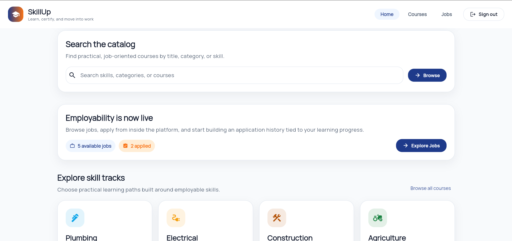
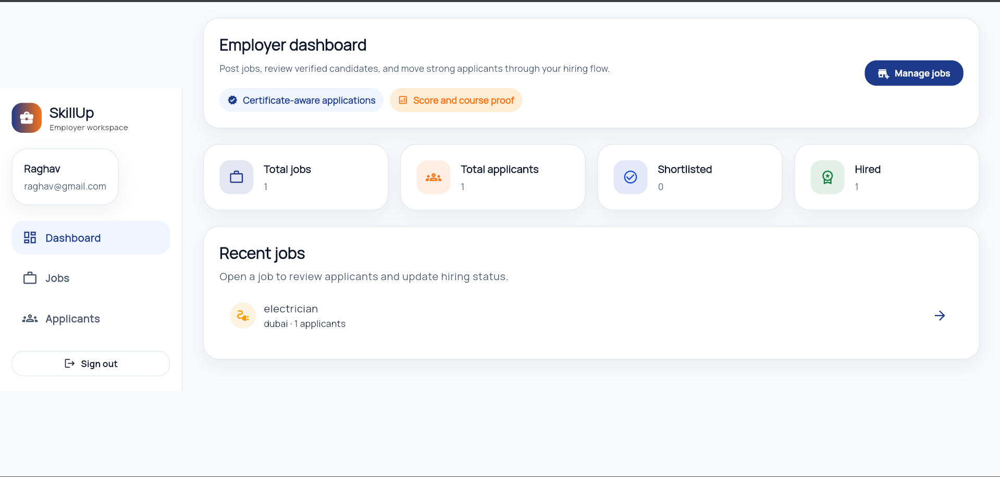

SkillUp India
"A vocational skill, certification, and employability platform that connects learners, educators, and employers through one continuous ecosystem: learn, test, get certified, apply, and get hired with verified skill proof."
Core Domain
EdTech + Hiring
Tech Stack
Flutter + Firebase
Key Feature
Skill Proof
System Roles
3 Modules
Problem Statement
India has a huge young workforce, but employability remains low because of a persistent gap between learning and hiring. Existing learning platforms teach skills and sometimes provide certificates, but they do not directly connect learners to verified job opportunities. On the other hand, job platforms allow candidates to apply, but employers still rely mostly on resumes and interviews without seeing structured proof of the applicant’s actual skill level.
This creates a trust problem in hiring, especially for vocational and practical careers like plumbing, electrical work, construction, and agriculture. SkillUp India addresses this gap by creating a full pipeline where certificates and scores are directly attached to job applications through a verification layer.
Literature Review / Market Research
Existing platforms such as Coursera, Udemy, and Skillshare focus on skill delivery and certifications, while LinkedIn, Naukri, and similar portals focus on recruitment. Very few systems merge structured learning, assessment, certificate generation, and evidence-backed hiring in one product workflow.
Research Gap / Innovation
SkillUp India introduces a verification-driven hiring model where an application is no longer just user plus job. It includes certification data, course linkage, and score evidence through a structured verificationSource object. This changes hiring from resume-based screening to proof-aware decision making.
Startup Opportunity
The platform can evolve into a real startup system because it combines content creation, student learning, and employer demand in one ecosystem. Its strongest differentiator is the trust layer created by verified skill proof at the moment of hiring.
System Methodology
Input / Data Layer
Role-based data stored in Firestore collections such as users, courses, lessons, tests, certificates, jobs, and applications. Lesson media and assets are handled through Firebase Storage.
Model / Workflow
A three-role workflow: Educator creates structured content, Student learns and earns certificates, Employer posts jobs and evaluates verified applications. Repository-level logic handles application generation and proof attachment.
Prototype Status
Working MVP with landing page, signup flow, student dashboard, educator dashboard, employer dashboard, courses, jobs, and application-level verification design.
VIEW OUTCOMESEnd-to-End Product Flow
Step 1
Create Course
Educator builds content and tests
Step 2
Learn Lessons
Student consumes practical modules
Step 3
Take Test
Assessment determines completion
Step 4
Get Certified
Certificate stored with score
Step 5
Apply to Job
Application includes skill proof
Step 6
Review Candidate
Employer evaluates verified data
Step 7
Hire
Status moves to shortlisted / hired
System Architecture
3-Layer Architecture
Layer 1
Frontend Layer
Flutter UI for web/mobile, role-specific screens, dashboard navigation, forms, and user interaction.
Layer 2
Application Layer
Repositories, business logic, validation, certificate matching, and application generation through structured proof logic.
Layer 3
Backend Layer
Firebase Authentication for identity, Cloud Firestore for structured documents, and Firebase Storage for lesson assets and media.
Role-Based Modules
Student Module
Browse courses, consume lessons, take assessments, earn certificates, and apply for jobs with attached proof.
Educator Module
Create courses, upload lessons, attach final tests, and structure practical learning pathways.
Employer Module
Post jobs, view applicants, review certificate-aware applications, and move candidates through hiring stages.
Core Innovation
verificationSource stores courseId, certificateId, and score inside the application, creating a direct link between learning and hiring.
Database / Entity Summary
users
userId, role, profile details
courses
title, category, educatorId
lessons
courseId, videoUrl, content
tests
courseId, questions, score logic
certificates
userId, courseId, score
jobs
employerId, category, skillTags
applications
userId, jobId, employerId, status, verificationSource
Prototype Screens

Landing Experience
The landing page communicates the product thesis clearly: build skills, get verified, get hired. It positions the platform as practical, career-oriented, and outcome-driven.

Role-Based Signup
The signup flow allows direct role selection among student, educator, and employer, which aligns with the multi-role architecture of the product.

Educator Workspace
The educator dashboard is oriented around content management, lesson structuring, and final test attachment, forming the supply side of the learning system.

Student Workspace
The student dashboard combines learning discovery and employability, making courses and jobs part of one continuous experience instead of separate systems.

Employer Workspace
The employer dashboard emphasizes certificate-aware applications, applicant counts, job management, and hiring status transitions. This interface demonstrates the proof-aware hiring model of the platform.
Results & Analysis
The current prototype completes the full learning-to-hiring loop. The most valuable result is architectural: the system already supports content creation, learning, certification, job discovery, employer review, and application-level proof. This creates a strong base for future AI matching, trust infrastructure, analytics, and production deployment.
Key Takeaways
Strongest Point
Not another course app and not another job portal. The core value lies in the link between proof and hiring.
Startup Angle
Creates a three-sided ecosystem of educators, learners, and employers with structured data at its center.
Scalability
Firebase backend and modular repositories support future scale, indexing, and feature growth.
Future Work
AI job matching, analytics dashboards, employer trust partnerships, and richer credential interoperability.
Academic Credits
Project Guide
Dr. Sakshi Shringhi
Team Member 1
Raghav Jalan
Reg No: 23FE10CSE00618